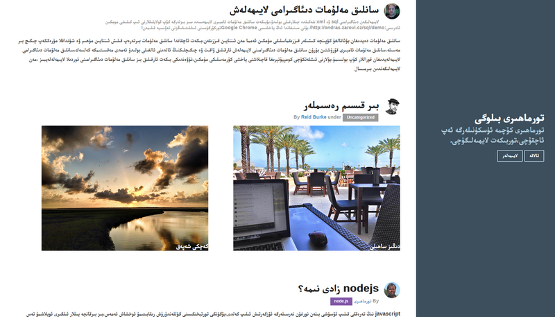

كەلگۈسى تورلايىھەرىڭىزنى تىزباشلاڭ
pure ھەربىرتوربىكەت لايھىەسىدە ئىشلەتكىلى بولۇشدەك نىشان بىلەن لايھىلەنگەن،بۇنى كۆرسىتىپ ئۆتۈش ئۈچۈن،بىزبەزى بىرئاددى pure لايىھەسىنى ياساپ چىقتۇق،بۇلايىھەلەرResponsive(يەنى كۆچمە ئۈسكۈنىلەرگە ماسلىشىشچان)بولۇپ ھىچقانداق بىر javascript قوللىنىلمىغان.بۇلايىھلەرنى كۆرگنىڭىزدە pure لايىھەسىنىڭ قانداق بولىدىغانلىقىنى چۈشىنەلەيسىز
قونما بەت

بۇسىزگە Responsive مەھسۇلات بولغان قونما بەتنى كۆرسىتپ بىرىدۇ،بۇ كاتەكچە ۋە يىتەكچى تىزىملىكنى قوللانغان
لايىھەنى كۆرۈش
چۈشۈرۈش
رەسىم كۆرگەزمىسى

بۇ سىزگە Responsive لىق(يەنى كۆچمە ئۈسكۈنىلەرگە ماسلىشىشچان)رەسىم كۆرگەزمىسنى كۆرستىدۇ،بۇ كاتەكچە،يىتەكچى تىزىملىك ۋە ئۇزىتىش جەدۋىلنى قوللانغان
لايىھەنى كۆرۈش